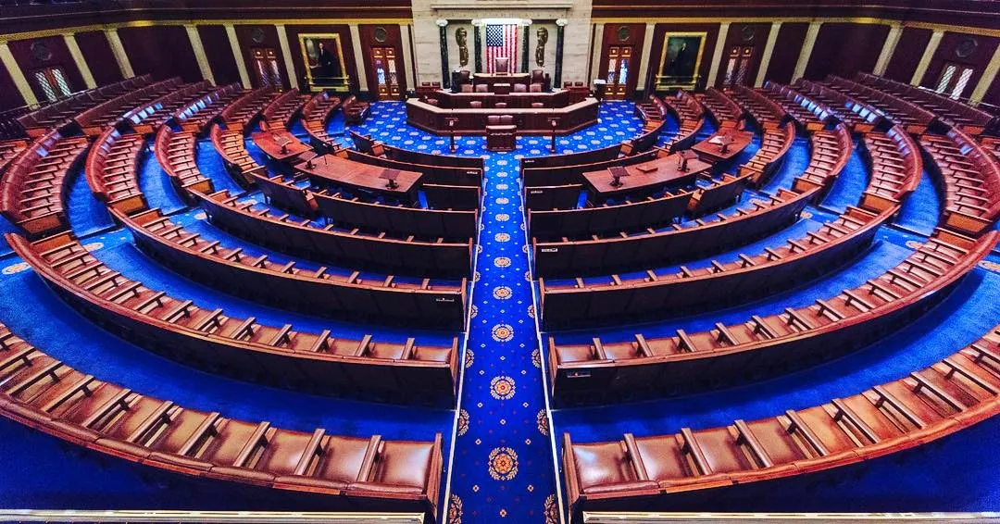
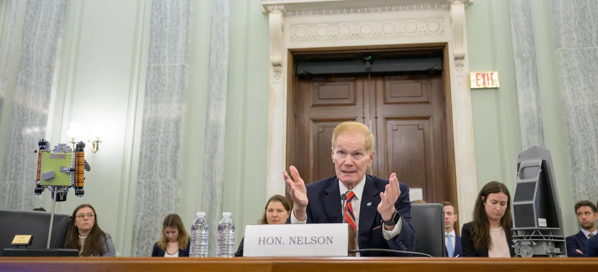

An area that elects a representative.
Who Has the Power? / Topic 2 / Civics
The Battle for Congress
Follow individual seats to chamber control. Test how a small shift can change leaders, committees, and the agenda without guaranteeing a new law.

Today’s question
How can a few seats change the decisions Congress considers?
Learning targets and success criteria
Learning targets
- I can explain how individual elections determine chamber membership.
- I can explain how a majority affects leaders and committees.
- I can distinguish organizing a chamber from passing a law.
Success criteria
- I can identify the majority in a constructed 435-seat House scenario.
- I can identify two decisions a new majority could influence.
- I can explain one reason chamber control does not guarantee a policy change.
Follow the investigation
Read down the page. Watch the assigned clip windows, use the evidence cards, and reuse your notes in the final explanation.
55 minutes before lunch. After lunch: 20–25 minutes of CNN10 and daily news.
Today you will submit
- Five practice choices, corrected after feedback.
- A short source note: one factual bullet and its source.
- An application note: two short bullets.
- One final explanation: two or three clear sentences.
Background readings and Push further are optional. Use the sentence frames, read-aloud support, or voice typing as needed. Follow your teacher’s paper accommodations. Drafts save only in this browser; submit in Canvas before lunch.
01Predict
Start with one seat
Last time, you learned what voters choose. Today, follow those choices into Congress. A small difference in seats can decide who organizes the work.
Read the Background: How can one race matter to the whole House?
House elections happen in individual districts. Each race adds one member to the chamber. After the races are counted, the overall membership determines which party can organize the House.
Our model uses two groups and all 435 voting seats filled. If one group has 218 seats and the other has 217, the first has more than half. This is a constructed example, not a report of current party totals. It helps us see why one closely contested race could affect the larger balance.
One group has 217 seats. The other has 218. Why might one seat matter?
Make a private prediction. It is okay not to know yet.
Follow one nearby race: Indiana’s Fourth District
United States Representative, Fourth District · November 3, 2026 general election
The winner fills one House seat. House members vote on federal laws and spending, serve on committees, and provide oversight. One winner does not alone determine chamber control or enact a promised policy.
Today’s connection: How could this one seat contribute to a majority without deciding it alone?
Race details and the starting point
Candidate list checked October 19, 2026. These are candidates, not declared November winners.
- Drew Cox — Democratic
- Jim Baird — Republican
- David E. Bokash — Write-In (Independent)
This is a shared nearby example. It may not be every student’s home district. No home address or family voting choice is needed.
Use federal spending as the recurring issue: how could a House member influence funding decisions affecting communities, and what agreement would still be needed? This is an institutional question, not a claim that the candidates hold identical positions.
Indiana Election Division: official general-election candidate list ↗ · 2026-09-22
Official file linked from the state’s Candidate Information page; read the United States Representative, Fourth District rows. The date identifies the file version.
Indiana Election Division: candidate information ↗ · 2026-10-19
Open the 2026 General Election Candidate List if the direct file is replaced. Recheck names before teaching.
Before the election: the dated starting point
As of 2026-10-19: Republicans organize the House majority. Republicans organize the Senate majority.
This records current chamber organization, not a 2026 prediction. Recheck before teaching; compare the same starting point with post-election evidence. No live seat totals are inferred here.
U.S. House: current leadership ↗ · 2026-10-19
The Republican leadership includes the House majority leader. Date is the check date.
U.S. Senate: current leadership and officers ↗ · 2026-10-19
The Republican leadership includes the Senate majority leader. Date is the check date.
02Learn
See how a majority forms
A majority means more than a number on a scoreboard. Watch how it connects to leadership, then move the seat model to see when control changes.
Before the clip: the essential language
The issues and proposals leaders prioritize.
A smaller group that studies issues, investigates, and considers legislation.
A smaller working group that examines proposals and questions witnesses.
The issues leaders choose to bring forward. Priority does not guarantee a new law.
Watch together · Assigned 0:00–3:30
Congressional Leadership: Crash Course Government #8 ↗
Crash Course / PBS Digital Studios · Published 2015-03-14 · Full runtime 8:10
Watch for: How can becoming the majority change who organizes the chamber?
Evergreen explanation. Names, amounts, and earlier election examples in this clip are dated examples, not 2026 results.
Stop at the assigned endpoint. Caption options vary by player; use the reading route if captions or playback are unavailable.
Reading route / core takeaways
- A majority can organize a chamber and choose leaders. The Speaker is elected by the House.
- Leaders influence the agenda and committee assignments. Current people and party totals differ from the dated video.
Pause and check
Stop at the assigned endpoint. Ask: How can becoming the majority change who organizes the chamber? Use the core takeaways to check the answer before continuing.
Read the Background: The essentials
Each House district elects a representative. In a simplified House with 435 filled voting seats and two groups, 218 is more than half. In real votes, vacancies and attendance can matter. A majority generally organizes the chamber, chooses leaders, and controls committee leadership. That affects which issues receive time and attention.
Read the Background: What does a congressional leader do?
Members do more than vote yes or no. Leaders help organize the chamber, set priorities, and coordinate members. The Speaker is elected by the House. Majority and minority leaders help their groups plan and respond to the other side.
A new majority can change leadership and committee organization. Those changes can influence what the chamber spends time considering. Keep the distinction clear: controlling the work schedule is consequential even when a leader cannot guarantee the final vote.
Move one seat. What changes?
Constructed model: all 435 voting seats filled; two groups. These are not actual 2026 counts.
With all seats filled, 218 is more than half. A majority can organize the House; it cannot guarantee agreement by the Senate or president.
Power or promise?
Classify each statement as an influence of chamber control or an outcome control does not guarantee.
Practice, feedback, then correct your choices. First-try errors are not graded.
03Evidence
Look inside the committees
Leadership matters partly because much of the work happens before a final vote. Look inside a committee to see how an issue can gain attention or meet an obstacle.

Why do committees matter?
Use the committee video and official legislative-process reference. Identify a decision made before a final floor vote.
Watch together · Assigned 0:00–4:00
Congressional Committees: Crash Course Government #7 ↗
Crash Course / PBS Digital Studios · Published 2015-03-06 · Full runtime 8:26
Watch for: Why does a committee chair matter before the whole chamber votes?
Evergreen explanation. Names, amounts, and earlier election examples in this clip are dated examples, not 2026 results.
Stop at the assigned endpoint. Caption options vary by player; use the reading route if captions or playback are unavailable.
Reading route / core takeaways
- A committee is a smaller working group that studies a subject, examines proposals, and questions witnesses.
- A chair influences what gets attention. A proposal can meet an obstacle before the full chamber votes.
Pause and check
Stop at the assigned endpoint. Ask: Why does a committee chair matter before the whole chamber votes? Use the core takeaways to check the answer before continuing.
Read the Background: Why can a committee change a bill’s chances?
A committee is a smaller working group focused on certain subjects. Members can examine a proposal, question people with relevant knowledge, and consider changes. This lets Congress work on many subjects without every member studying every detail at once.
A chair can influence which matters receive attention. If a proposal never moves forward, the full chamber may never vote on it. That is why committee control matters before the moment usually shown in headlines: the final floor vote.
A proposal can meet an obstacle before a floor vote
The House legislative-process reference explains that bills are referred to committees for examination. A committee can hear evidence, consider changes, and decide whether to report a bill. Chamber and committee priorities matter before the full House acts.
U.S. House: the legislative process ↗ · 2026-10-19
Official explanation of bills, committees, and presidential action.
Classroom paraphrase of the linked official explanation; use the source to check the rule.
One factual bullet and a source name are enough.
Check your response:
- Name two leadership, committee, or agenda decisions.
- Identify the source that supports the connection.
Start here
A new majority could influence ____ and ____. My source is ____.
Push further / optional
Explain how a proposal might meet an obstacle before a floor vote.
More sources and optional clips
U.S. House: representatives ↗
Official membership and district lookup. Do not enter a home address in BeCurrent.
U.S. House: leadership ↗
Official current leadership. Focus on the jobs, not memorizing names.
U.S. House: the legislative process ↗
Official explanation of bills, committees, and presidential action.
Optional extension · 5:01
How Alaska became a battleground in the fight for the Senate ↗
PBS NewsHour · Published 2026-10-16 · Full runtime 5:01
Watch for: How could one statewide race affect chamber control? Which statements are results and which are still campaign claims?
Dated 2026 campaign reporting. This report does not establish a November winner.
Stop at the assigned endpoint. Caption options vary by player; use the reading route if captions or playback are unavailable.
Pause and check
Use in place of extra committee discussion, not as additional time.
04Apply
Test a campaign promise
Now put the seat model and the committee story together. A new majority has opportunities, but its promises still face other decision-makers.
Constructed scenario: Group A moves from 217 to 218 of 435 filled House seats. Its leaders promise a new school-safety law. The Senate and president have not agreed.
Read the Background: Does controlling the House mean controlling the government?
A House majority can organize that chamber, but the Senate is separate. A bill ordinarily needs the same text approved by both chambers before presidential action. Agreement inside one group does not guarantee agreement elsewhere.
The Senate also has its own rules. An outright majority in a full Senate is 51 seats; a 50–50 split involves the vice president’s tie-breaking role and chamber organization. Some procedures create additional hurdles. Winning a majority and having enough support for every action are different questions.
Two short bullets are enough.
Check your response:
- Apply today’s idea to the situation.
- Name the limit or condition.
Start here
Group A could organize ____, but a law still needs ____.
Push further / optional
Explain one additional political or procedural obstacle.
05File
Explain the power shift
You have traced the path from separate races to membership, leadership, and priorities. Use that chain to explain why a few seats can matter so much.
Read the Background: Connect a seat change to a real consequence
Avoid ending your answer at “one party wins.” Explain the next step. A changed majority could bring different leaders, different committee chairs, or a different agenda. Then name the decision those changes could affect.
Finish with a limit. A new priority is not automatically a new law. The strongest explanation shows why the seat change matters while recognizing that other institutions and individual votes still shape the outcome.
How this investigation is assessed / 20 points
Political preferences are not scored. Short writing, dictated text, and agreed paper responses can demonstrate the same learning.
- Seats and majority · 6 points. Use the constructed 435-filled-seat model to explain why 218 is a majority. Do not present it as an actual 2026 result.
- Relevant evidence · 4 points. Name a clip or official reference and accurately explain evidence about leaders or committees.
- Influence and limits · 8 points. Explain two decisions a majority can influence and why the other chamber or presidential action still matters for a law.
- Explain your thinking · 2 points. Make the seat-to-power connection understandable. Concise notes, dictated text, and agreed paper work can show the same learning.
Two or three clear sentences are enough.
Check your response:
- identify the majority in a constructed 435-seat House scenario.
- identify two decisions a new majority could influence.
- explain one reason chamber control does not guarantee a policy change.
Start here
One race changes ____. Enough seats can change ____. That can affect ____, but ____.
Push further / optional
Distinguish winning the most votes nationally from winning enough separate seats.
File your investigation
- Review your practice and source note, application note, and final explanation.
- Choose Gather All My Work. After any revision, gather again.
- Paste into the assigned Canvas Text Entry and submit. Check the submission confirmation.
Drafts save only on this browser. Nothing reaches your teacher until you submit in Canvas. Manual copy always selects the latest work.
Source standards and video dates
Government references establish institutional facts. PBS, WFYI, and Crash Course provide educational explanations. Campaign messages are evidence of a message, not independent proof of its claim. Results need a source, check date, and reporting stage.
The specified play windows limit viewing time; the written takeaways supply the lesson’s core facts. Earlier names and examples in videos are historical examples. Check the player’s caption options. Use the visible takeaways and background reading if playback or captions are unavailable.
U.S. House: representatives ↗
Official membership and district lookup. Do not enter a home address in BeCurrent.
U.S. House: leadership ↗
Official current leadership. Focus on the jobs, not memorizing names.
U.S. House: the legislative process ↗
Official explanation of bills, committees, and presidential action.
Materials checked 2026-10-19. Recheck current race and source details before class.
Next: The Power to Stop a President →
Open printable activity and evidence packet · After lunch: The Desk